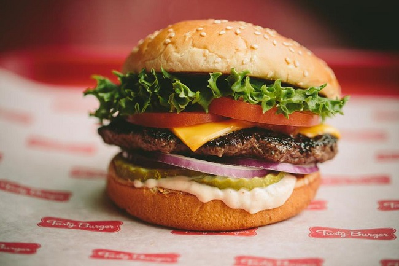

Что Важно Знать КАЖДОМУ О Мозге [5 ФАКТОВ]

Всем привет! Сейчас вы узнаете кое-что полезное, что надо знать о своем мозге, но не его массу и всякую такую фигню. Информация именно прикладная! Не затягиваем! Погнали!
-
Ты всегда меняешься
Личность, взгляды, характер могут кардинально измениться. То, что люди не меняются – это миф. Честнее было бы сказать «люди не хотят меняться» или «людям сложно меняться».
Во-первых, есть одна способность мозга, которая и предполагает постоянные изменения – нейропластичность (Ссылка 1). Это когда мозг меняет свою структуру. В сети вы можете найти десятки исследований о том, что объемы разных областей мозга подвержены изменениям. Даже кора (2)! Так что твой мозг сейчас и 5 лет назад – 2 разных мозга, особенно если ты активно им пользовался или разрушал.
{kind=link}
Во-вторых, метаанализ с выборкой почти 50 тыс человек показал, что от молодого возраста до старости, 4 из 5 основных показателей психики (открытость, добросовестность, экстраверсия, согласие, невротизм) подвергаются статистическим изменениям за жизнь каждого человека (3). Это сильно! Так что твоя психика или характер тоже меняются!
И в-третьих, просто вспомните пример из своей жизни, когда у человека были одни интересы и поведение, а теперь он изменился до неузнаваемости.
Практика: Скорость перемен зависит от условий и желания. То на что ты тратишь больше всего времени – формирует твою личность. Хочешь развить в себе какое-то качество? Да без проблем! Сложности только со стартом бывают.
{kind=link}
-
Эмоции – это вещества
Сильное знание, которое может изменить всю жизнь. Да, все наши чувства, страхи, переживания, эйфория и ощущение счастья – это вещества, чаще всего гормоны и нейромедиаторы.
К этому знанию проще относиться двояко: когда тебе круто и отличное настроение – лучше забыть. Когда фигово и начинается депресняк – вспоминаем.
Тут даже есть некий философский подтекст. Любой человек в гневе – это человек под зашкаливающей активностью миндалины, норадреналина и гормонов коры надпочечников. Если ему же дать мощный транквилизатор и нейролептик, то через час он будет иметь овощноподобное состояние. Так что это только состояние «в моменте», а не так, что этот чел пожизненно злобный.
Конечно, сложно себя контролировать, и порою выход эмоциям нужен. Тем не менее знайте, эмоции – это вещества. Отпускайте себя без раздумий в позитиве и гасите эмоции в негативе!
{kind=link}
-
Память искажает воспоминания
Память — это не конкретное место в голове, а последовательная цепочка из нейронов, типо поезда с вагонами, где каждый поезд – воспоминание. Вот оперативная и пространственная память – это отдел мозга под названием гиппокамп. А общая, разные воспоминания от нескольких дней назад до нескольких десятков лет – это последовательность набора нейронов.
Прикол в том, что она изменчива (4)! И меняется со временем, с возрастом! Можете быть уверены, что события даже 10 летней давности были другими, чем вам помнится сейчас. Причем не только лучше или хуже, но и в нейтральных моментах. Новогодняя елка в детстве могла быть не в том углу комнаты и игрушки на ней светились другим цветом.
Практическая польза: делайте фото без обработок или записи событий с передачей эмоционального состояния. Так памяти будет сложнее трансформировать воспоминание.
{kind=link}
-
Усталость – это креативно
Креативные решение часто приходят в голову в моменты усталости или истощения. Это звучит нелогично, но на самом деле это имеет смысл.
По мере возрастания усталости, огромными темпами теряется внимание. Доходит до того, что сложно строить предложения или читать даже простые текста. Это состояние так же хреновое для обучения: нет ни памяти, ни мышления. Однако, когда мы говорим о творчестве или креативе – все складывается иначе. Креативность подключается при несовпадении результата, так сказать. В эти моменты мозг начинает работать несколько иначе, задействуя нестандартные для себя участки.
Это похоже на состояние перед засыпанием или сразу после пробуждения. Согласитесь, в эти моменты частенько происходит прилив креатива. Отличия есть даже по электрической активности мозга.
{kind=link}
Так что, в моменты сильной усталости не надо загружать себя, эффективность будет стремиться к нулю. Вместо этого попробуйте набросать десяточку вариантов решения каких-то задач. Отдохните или выспитесь и взгляните на них. 9 из 10 вариантов будет бредом, но в 1-м вы заметите нечто гениальное.
{kind=link}
-
Зависимость от всего
Ощущения притупляются, если нет разбалансировки. Это как наркомания! Если ты живешь на улице – для тебя счастье поспать в тепле, когда в тепле – хочется чуть удобства. Когда удобно, хочется масштаба и т.д. Когда-то давно был сюжет "Не будь торчком!" там этот эффект разбирался подробнее.
Основывается все на снижении чувствительности к рецепторам. И в зависимости от уровня подъема – быстрее привыкание. Если из жигулей ты пересел в премиум авто за день – станешь торчком мгновенно и более простые авто тебя не зацепят! Наркота делает так же, только искусственно. В итоге: меньше счастья от жизни.
Практический выход: планомерность, поступательное увеличение дозировки чего угодно + иногда делать аскетичные периоды в несколько недель с минимальным набором удовольствий. Так чувствительность рецепторов к эндогенным гормонам и нейромедиаторам всегда будет на высоком уровне, а значит и самочувствие лучше!
{kind=link}
Итог:
— Мозг меняется под воздействием времени и опыта. Мы можем быть кем захотим.
— Все эмоции – это работа веществ. Помните об этом в гневе и забывайте, когда все круто.
— Память постоянно врет. Делайте записи событий и фото.
— Усталость оборачивается в креатив. Если дико устали – не думайте, а придумавайте.
— Мы привыкаем ко всему. Так что практикуем планомерность и временный аскетизм.
Что ж, надеюсь выпуск был полезен и интересен! Удачи и до скорого!